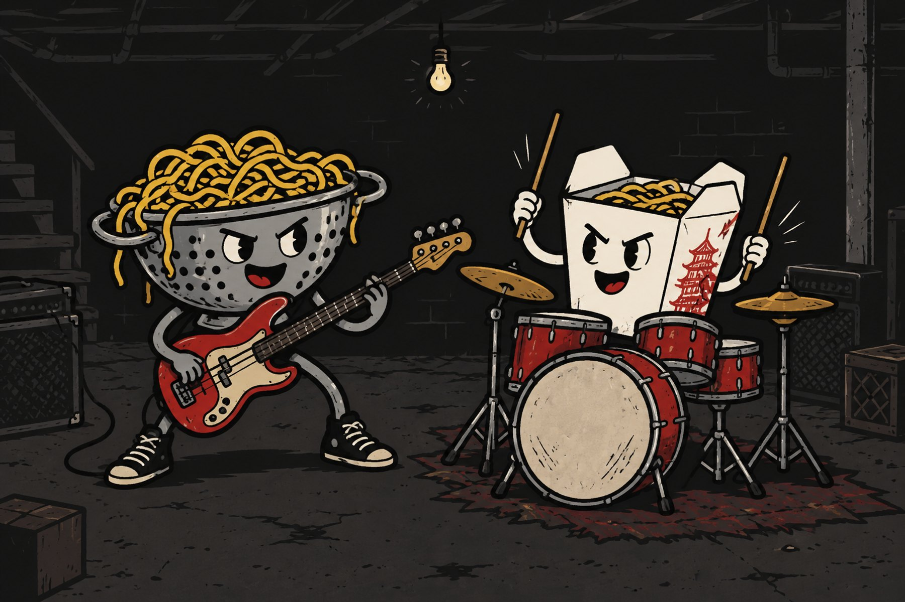
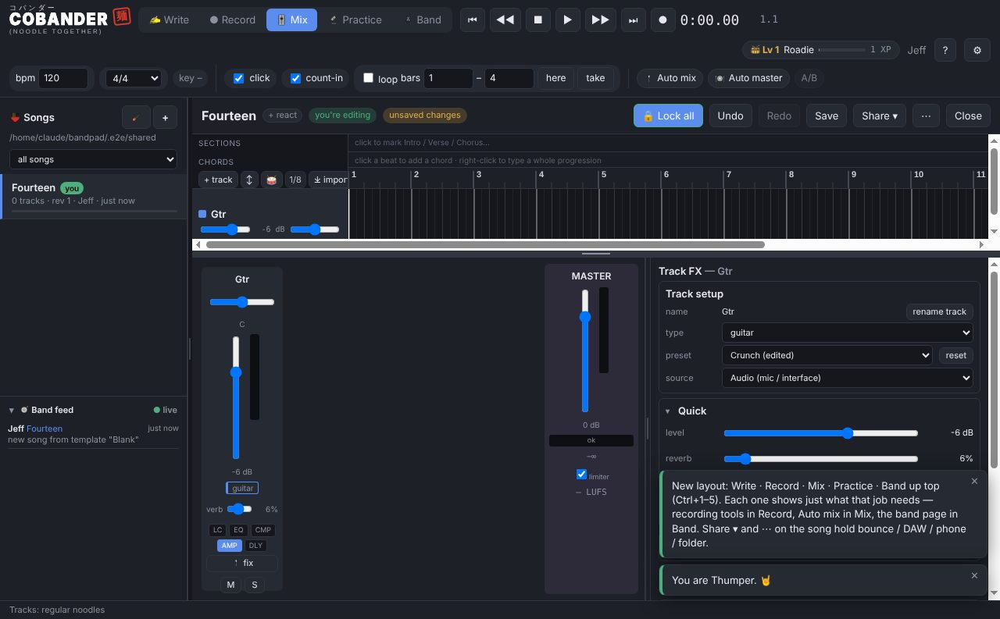
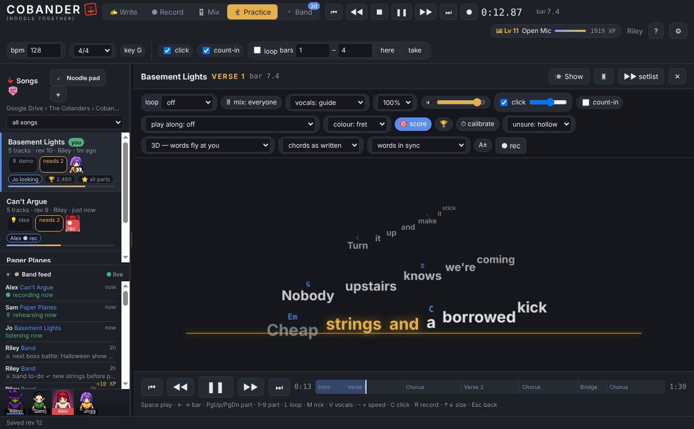
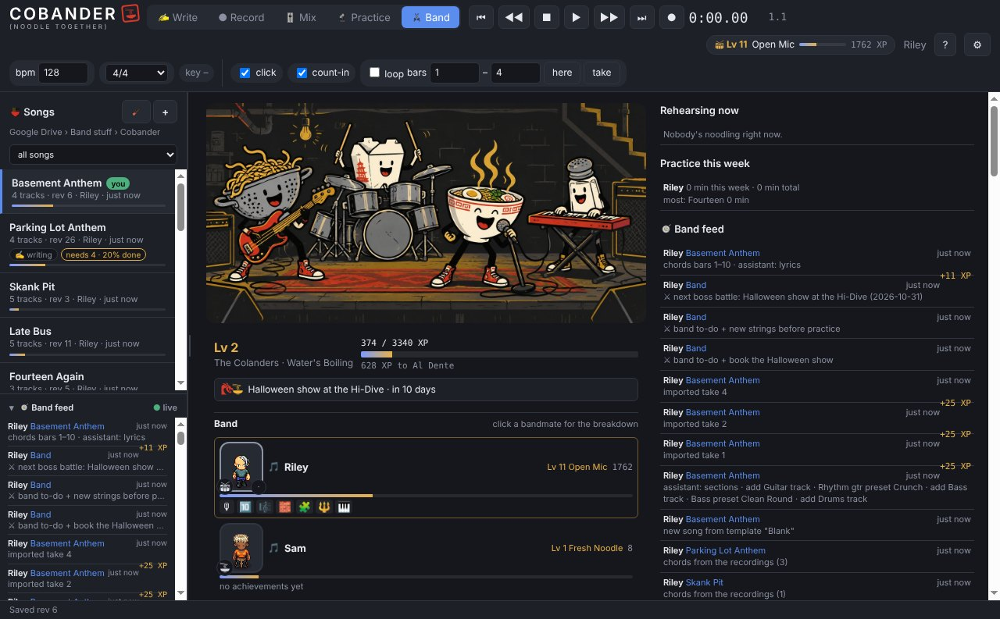

A sketchpad for your whole band. Everyone records, writes, mixes and practices on their own computer; the song lives in the folder you already share.

Somebody records a riff at 11 pm. By 11:01 it's on everyone else's screen, on its own track, in the right place in the song. The drummer adds a take at lunch. The singer pins the words to where she sings them. Nobody uploaded anything, nobody made an account, and nobody paid for a plan — the band's Google Drive (or OneDrive, iCloud, Dropbox) is the server.
It's for the band that has songs in a group chat and voice memos, not for mixing an album. Although it mixes pretty well.


Sing the take. Cobander listens to the vocal, types the words, and pins each one to the moment you sang it — so the lyric sheet, the karaoke view and the chart all exist before anyone opens a notes app.
Record the guitar or the bass and it drafts the chord chart from the audio — bar by bar, with the bass line naming the roots. Guitar grips, capo-shifted, show up as a scrolling play-along lane so the rest of the band can learn it by watching.
The key is heard from the takes, not typed. Need it a step down for the singer? Transpose the whole song: the recordings, the MIDI, the chords and the chart move together, and the band hears the new key at the next sync.
Words fly at you and land on the line when it's time to sing them. Loop the part you keep blowing, slow it down without changing pitch, take your own part out and play along with the rest, and let your phone follow on the music stand. Minutes count toward your level.
Band stuff / Cobander.No. One purchase covers the whole band — send the installer to your bandmates. Updates come to everyone through the shared folder.
Make one — a free Google Drive or OneDrive account is enough. Cobander needs a folder every bandmate's computer syncs; that's the whole system. There's no Cobander server, which is why there's no subscription.
It records real takes, mixes with real EQ and compression, bounces stems, and hands the whole song off to a studio DAW with markers when it's ready for one. It is built for getting ideas down fast with a band, not for engineering a record.
Only to your band's shared folder. No telemetry, no accounts, no uploads. Speech-to-text, chord detection and pitch check all run locally.
Both. One person on a Mac and three on Windows works fine — it's all files in a folder.
Ko-fi or Venmo @jdeuel44. Buy Jeff a PBR.